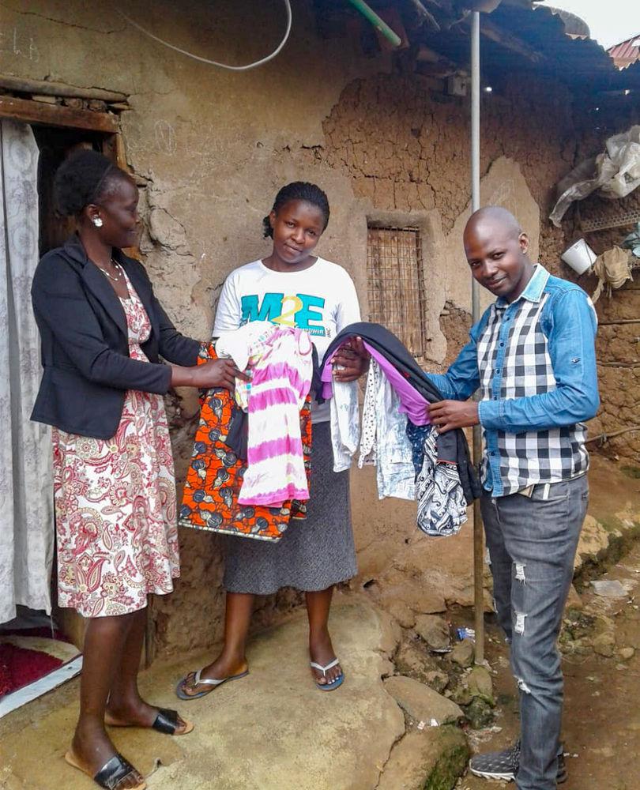

Use Cases - Honoring 2018
Closing 2018 with a bang! We mark the end of 2018 and the beginning of this festive season by honoring schools, clinics, micro and small businesses who empowered themselves economically through Community Currency. Business people across communities in Kibera, Kangemi and Kawangware came together today to share how the use of Sarafu-Credit has impacted their lives as they joined in the merry of economic empowerment highlighting their self development. Honoring these micro businesses serves as a motivation for people to take charge of their lives and focus on empowering themselves and others in the community that chronically lacks national currency.

Rose Ongoche (pictured above), a business woman who sells Maandazis and doughnuts in Kangemi, says only one month has passed since she enrolled in the system and received 400 Kangemi-Pesa tokens to facilitate her trading with members in the community. Rose recalls, "I have been selling maandazis using Community Currency to customers and the neighboring business people who frequent my shack every morning. Since I joined the network about a month ago, I have come to realize its benefits in ways I could not imagine at first. Most importantly, is how tokens can be transacted easily and fast without needing change. This helps since I can serve more customers without having to go from shop to shop looking for change which can get hectic especially in the morning hours." As a staunch user in the journey of economic discovery she plans to introduce and educate her friends and other businesses in the Sarafu-Network.
In Kibera, Razao Kivinza (pictured above) who sells clothes by the roadside delighted in the chance to be able to show the versatility of M-Sarafu tokens. she was introduced into the system by her friends who trade amongst themselves within the neighborhood. But she claimed to only notice them using the tokens to buy food and vegetables. Until one time she was approached by a friend who explained to her that the platform hosts categories for different businesses and so she could also use her tokens to sell clothes and cater for her daily needs.
“Today I am very happy to have the chance to have my business showcased to others, as I learn the different ways to work with more community members and and how we could sustain our local economy. It is a chance to network, learn and braid the rope with different traders."
'Braiding the Rope' is the term we use for the process of bringing people into the network. People in the community learn from each other and begin to trade with each-other and bring in other traders from their daily life which causes the network to organically grow. Witnessing this organic growth recorded on the blockchain is amazing.
Each digital trade (using feature phones with no internet) uses the Bancor Protocol to track trade deficits between communities in the network and impact data from each transaction is stored on the POA.network blockchain.
These examples highlight the proof of impact Community Currency continues to make, across users in underserved communities in Kenya. It reinforces that building community economies by use of Liquid Community Currencies is the start of addressing money scarcity and triggering resilient circulation which creates access to education, food, clinics and general goods and services.
#cryptocurrency #blockchain #impact #sustainabledevelopment #Kenya #communitycurrency